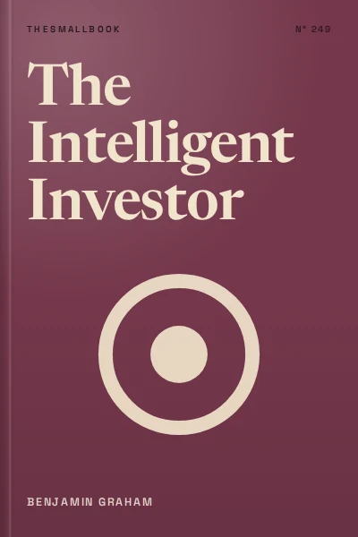
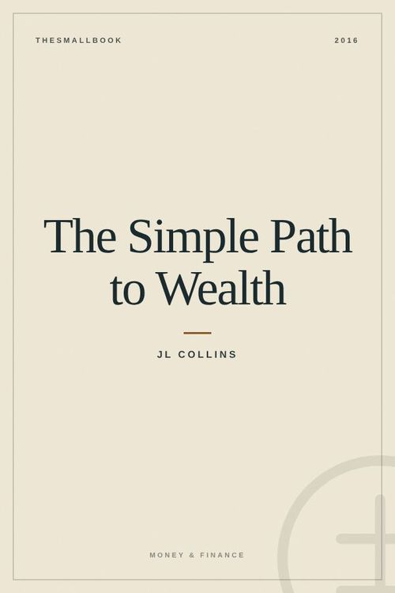

Library › Ask the Library › How should I start investing?
How should I start investing?
The short answer
You can't beat the market, so join it. Buy the whole market through low-cost index funds, hold for decades, and ignore the noise.
The books behind the answer

A Random Walk Down Wall Street
Burton Malkiel · 1973 · 8 min · 6 lessons
Stock prices move like a random walk - nobody can predict them. So stop trying: buy the whole market and hold.
- The Index Solution: Buy the whole haystack. Index funds beat most professionals because they cost almost nothing.

The Intelligent Investor
Benjamin Graham · 1949 · 8 min · 6 lessons
The investor's chief problem - and even his worst enemy - is likely to be himself. Buy value, demand a margin of safety, and use Mr. Market instead of obeying him.
- Margin of Safety: The Three Most Important Words in Investing: Price is what you pay; value is what you get. Never buy without a gap between the two.

The Simple Path to Wealth
JL Collins · 2016 · 8 min · 6 lessons
Spend less than you earn, invest the rest in index funds, and let decades do the heavy lifting.
- Invest in the Whole Market: Own a sliver of every company, then you can't lose to the market because you ARE the market.

The Little Book of Common Sense Investing
John C. Bogle · 2007 · 8 min · 6 lessons
Don't look for the needle in the haystack. Buy the haystack. Costs are the one thing you control - and the one thing that decides everything.
- The Tyranny of Compounding Costs: Fees are the silent killer: every 1% fee eats a third of your lifetime gains.
A failure that proves it
Why did Bunker Hunt fail?
1980 · MONEY · Loss: The Hunt brothers lost ~$1.5B of their own fortune
The Hunt brothers cornered silver and lost a billion dollars. No position is too big to fail, diversify.
No position is too big to fail - the market is bigger than anyone. Leverage multiplies confidence into ruin: genius plus leverage equals fragility. Diversify, stay humble, and never bet the fortune on one conviction.
Why did Bernie Madoff fail?
2008 · FRAUD · Loss: $65B - history's largest Ponzi
The biggest fraud in history worked because nobody checked. If a return is too good, verify it yourself.
'Enough' is a real number, and not knowing yours is lethal. Also: returns that never have a down year aren't skill - they're fiction. If it's too smooth to be true, it is.
Also asked in Hindi and Hinglish
People also ask this as: paisa invest kahan karein, SIP kaise start karein, share market mein invest kaise karein. The answer on this page stays in simple English, and the live book can be read in Hindi or Hinglish.
Questions people ask next
Can I read this in Hindi?
Yes. This answer is written in simple English. Open any linked book and choose Hindi or Hinglish to read the full lessons in your language, with audio where available.